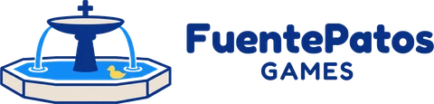
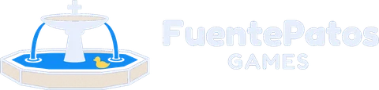
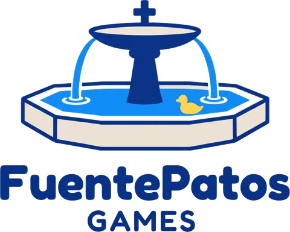
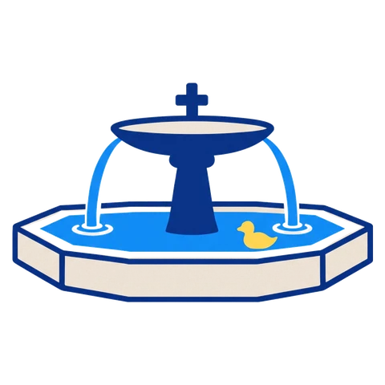
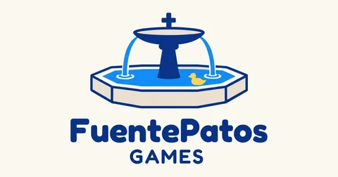
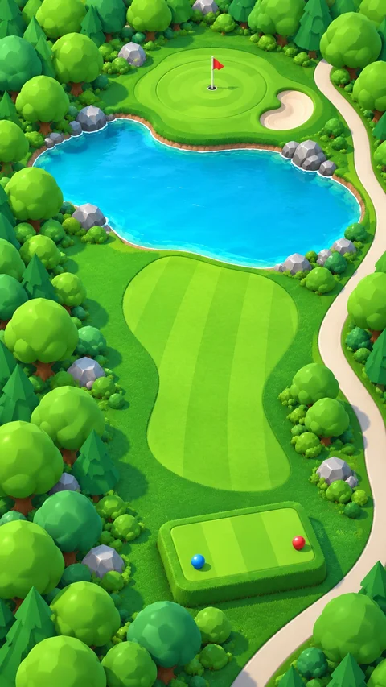

PRESS KIT
Prensa
Todo lo necesario para hablar de FuentePatos y Grow Greens. Puedes usar libremente estos materiales en artículos, vídeos y directos sobre el estudio y sus juegos.
Descargar todo (.zip · 3.0 MB) ↓El estudio
- Nombre
- FuentePatos
- Ubicación
- Constantina (Sevilla), España
- Fundación
- 2026
- Equipo
- 1 persona
- Web
- FuentePatos
- Contacto de prensa
- contact@fuentepatos.com
Descripción corta
FuentePatos es un estudio independiente de videojuegos para móvil nacido en Constantina (Sevilla). Crea pequeños mundos con encanto y grandes planes dentro.
Descripción larga
FuentePatos es un estudio independiente fundado en 2026 en Constantina, un pueblo de la Sierra Norte de Sevilla. Detrás hay una sola persona con una idea clara: hacer juegos para móvil que se sientan como pequeños mundos, llenos de detalles, personajes y cosas que construir.
El nombre es un homenaje personal: Constantina es el pueblo natal de su fundador y el lugar al que está unida su familia. La identidad nace del agua: una fuente y un pato amarillo que resumen el espíritu del estudio, cercano, curioso y con sentido del humor. Su primer proyecto es Grow Greens, un juego de golf y gestión para iPhone y Android que está en desarrollo.
Short description (English)
FuentePatos is an independent mobile game studio founded in 2026 in Constantina (Seville, Spain), the founder’s hometown and a personal tribute to their roots. It makes charming small worlds with big plans inside. Its first project, Grow Greens, is a golf and management game for iPhone and Android, currently in development.
Grow Greens
- Género
- Golf y gestión
- Plataformas
- iPhone y Android
- Estado
- En desarrollo
- Lanzamiento
- Por anunciar
- Más información
- Página del juego
Un pequeño campo, una gran idea por hacer crecer. Grow Greens parte de un campo de golf modesto en mitad del bosque que el jugador irá ampliando con nuevos caminos, instalaciones y posibilidades. Árboles redondeados, agua luminosa y un ambiente amable que apetece recorrer.
El arte disponible es conceptual y no representa capturas del juego final. Las mecánicas se concretarán a medida que avance el desarrollo.
Logos e imágenes













Los logos tienen fondo transparente. Por favor, no los deformes, recortes ni cambies sus colores.